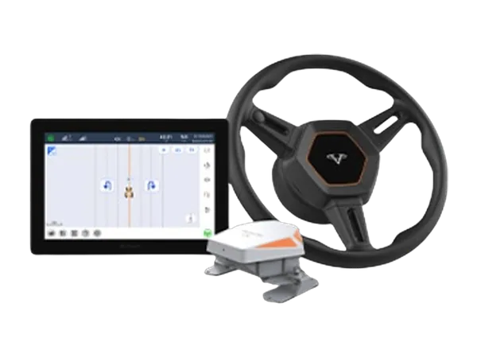
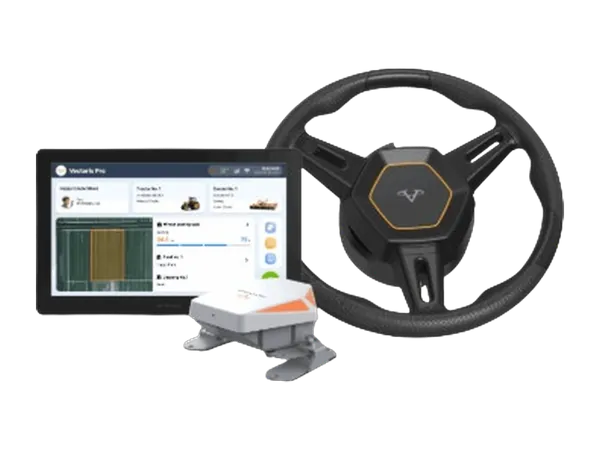

Traktor untuk Kebun Sawit
Traktor Zoomlion dan sistem auto steering VectorAgr untuk pekerjaan di perkebunan kelapa sawit.
Konsultasi Traktor Sawit via WhatsAppTractors for Oil Palm Plantations
Zoomlion tractors and VectorAgr auto steering systems for oil palm plantation work.
Ask About Oil Palm Tractors on WhatsAppTraktor adalah tulang punggung mekanisasi kebun sawit. Traktor dipakai untuk menyiapkan lahan saat peremajaan (replanting), menarik trailer pengangkut tandan buah segar (TBS), merawat jalan kebun, hingga menarik alat penyemprot dan penabur pupuk.
Kebun sawit umumnya luas, sering berlumpur, dan berkontur, sehingga traktornya perlu dipilih dengan cermat. PT Diesel Agri Sukses Sejahtera (DASS) siap membantu memilih traktor Zoomlion yang sesuai kebutuhan kebun Anda.
Yang Perlu Diperhatikan Saat Memilih Traktor untuk Sawit
Penggerak 4WD
Penggerak empat roda memberi traksi lebih baik di jalan kebun yang licin dan berlumpur, terutama saat musim hujan.
Kelas tenaga yang sesuai
Menarik trailer TBS bermuatan penuh atau mengolah lahan replanting membutuhkan tenaga lebih besar dibanding pekerjaan perawatan ringan.
Ban dan jarak ke tanah
Pilih ban yang sesuai kondisi tanah dan jarak bebas ke tanah yang cukup agar traktor tidak mudah tersangkut di lahan berlumpur.
Auto steering
Sistem kemudi otomatis membantu traktor bekerja lurus dan presisi, mengurangi tumpang tindih saat pengolahan lahan dan pemupukan.
Kenapa Membeli Traktor di DASS?
Distributor Resmi
Unit resmi dari prinsipal, disertai garansi dan dokumen lengkap.
Sparepart Tersedia
Stok suku cadang asli untuk meminimalkan waktu unit berhenti operasi.
Layanan Servis
Teknisi siap menangani perawatan berkala hingga perbaikan di lokasi.
Konsultasi Teknis
Kami bantu menentukan unit yang sesuai luas lahan dan jenis pekerjaan.
Tractors are the backbone of oil palm mechanisation. They are used to prepare land during replanting, pull trailers carrying fresh fruit bunches (FFB), maintain estate roads, and tow sprayers and fertiliser spreaders.
Oil palm estates are usually large, often muddy, and hilly, so tractors must be chosen carefully. PT Diesel Agri Sukses Sejahtera (DASS) can help you choose the right Zoomlion tractor for your estate.
What to Consider When Choosing a Tractor for Oil Palm
Four-Wheel Drive
Four-wheel drive gives better traction on slippery, muddy estate roads, especially in the rainy season.
The Right Power Class
Pulling fully loaded FFB trailers or preparing replanting land needs more power than light maintenance work.
Tyres and Ground Clearance
Choose tyres suited to the soil and enough ground clearance so the tractor does not get stuck in muddy ground.
Auto Steering
Automatic steering keeps the tractor working straight and precisely, reducing overlaps during land preparation and fertilising.
Why Buy a Tractor from DASS?
Authorised Distributor
Genuine units from the principal, with warranty and complete documents.
Spare Parts Available
Genuine spare parts in stock to minimise downtime.
Service Support
Technicians ready for scheduled maintenance and on-site repairs.
Technical Consultation
We help you choose the unit that fits your land and type of work.
拖拉机是油棕种植园机械化的核心装备，可用于翻种（重新种植）时的整地、牵引运输鲜果串（FFB）的拖车、维护园区道路，以及牵引喷雾机和撒肥机。
油棕种植园通常面积大、道路泥泞且地形起伏，因此需要谨慎选择拖拉机。PT Diesel Agri Sukses Sejahtera（DASS）可帮助您选择适合种植园的中联重科拖拉机。
为油棕园选择拖拉机的注意事项
四轮驱动
四轮驱动在湿滑泥泞的园区道路上牵引力更好，雨季尤为明显。
合适的功率等级
牵引满载鲜果串拖车或翻种整地，比轻度管护作业需要更大的功率。
轮胎与离地间隙
选择适合土壤条件的轮胎和足够的离地间隙，避免拖拉机陷入泥地。
自动驾驶
自动驾驶系统让拖拉机作业笔直精准，减少整地和施肥时的重叠。
为什么选择在DASS购买拖拉机？
授权经销商
原厂正品，提供保修及完整文件。
配件充足
原厂配件库存充足，最大限度减少停机时间。
维修服务
技术人员可提供定期保养和现场维修。
技术咨询
帮助您根据土地面积和作业类型选择合适的机型。
Traktor & Auto Steering untuk Perkebunan
Tractors & Auto Steering for Plantations
适用于种植园的拖拉机与自动驾驶

RS1304 / RS1604
RS1304 / RS1604
Tractor

PG2004
PG2004
Tractor

RK504
RK504
Tractor

RK704
RK704
Tractor

RK754
RK754
Tractor

RC904
RC904
Tractor

RC1104
RC1104
Tractor

RM904 / RM1104
RM904 / RM1104
Tractor

RN904-1
RN904-1
Tractor

RN1104-1
RN1104-1
Tractor

CN1104
CN1104
Tractor

RL1604
RL1604
Tractor

RG1604 / RG1804 / RG2004
RG Series
Tractor

PL1604
PL1604
Tractor

PQ2604 / PQ2754
PQ Series
Tractor

PV3204
PV3204
Tractor

PL2304
PL2304
Tractor

RM804
RM804
Tractor

1LF-550T / 560T / 650T / 750–950T / 1050–1350T
Reversible Plow 1LF-550T – 1350T
Implement

1LF-Q450T / Q550T
Reversible Plow 1LF-Q450T / Q550T
Implement

2BMXMF-4A / 6A / 8
Precision Seeder 2BMXM Series
Implement

Auto Steering System
HD408
Auto Steering System

Auto Steering System
HD812
Auto Steering System

Auto Steering System
HD818
Auto Steering System
Pertanyaan yang Sering Diajukan
Berapa HP traktor yang cocok untuk kebun sawit?
Tergantung pekerjaan utamanya. Perawatan jalan dan penyemprotan bisa memakai traktor kelas menengah, sedangkan menarik trailer TBS bermuatan berat dan mengolah lahan replanting membutuhkan traktor bertenaga lebih besar. Tim kami siap membantu menghitungnya.
Apakah traktor bisa dipasangi auto steering?
Bisa. Sistem auto steering VectorAgr seperti HD812 kompatibel dengan traktor, combine harvester, dan sprayer dari berbagai merek.
Di mana membeli traktor untuk kebun sawit?
Di PT Diesel Agri Sukses Sejahtera, Jalan River Garden Boulevard No. 19B, Cakung Timur, Jakarta Timur. Hubungi kami lewat WhatsApp 0811-1660-2926 untuk konsultasi.
Apakah tersedia sparepart dan servis?
Ya. Kami menyediakan sparepart asli dan layanan servis untuk traktor Zoomlion dan sistem auto steering VectorAgr.
Baca Juga
- Auto Steering Traktor Mulai Dilirik Perkebunan: Apa Manfaatnya?
- Kenali Jenis-Jenis dan Cara Pilih Ban Traktor yang Tepat
- Musim Hujan Segera Tiba: 7 Perawatan Traktor Sebelum Musim Tanam
- Traktor Hybrid Zoomlion Jadi Sorotan 2026: Diklaim Hemat Solar hingga 30%
Lihat Juga
Frequently Asked Questions
What horsepower tractor suits an oil palm estate?
It depends on the main job. Road maintenance and spraying can use a mid-range tractor, while pulling heavy FFB trailers and preparing replanting land need a more powerful tractor. Our team can help you work it out.
Can tractors be fitted with auto steering?
Yes. VectorAgr auto steering systems such as the HD812 are compatible with tractors, combine harvesters, and sprayers from many brands.
Where can I buy a tractor for an oil palm estate?
From PT Diesel Agri Sukses Sejahtera, Jalan River Garden Boulevard No. 19B, Cakung Timur, East Jakarta. Contact us on WhatsApp 0811-1660-2926 for advice.
Are spare parts and servicing available?
Yes. We provide genuine spare parts and service for Zoomlion tractors and VectorAgr auto steering systems.
Read Also
- Plantations Turn to Tractor Auto Steering: What Are the Benefits?
- Know the Types of Tractor Tyres and How to Choose the Right One
- Rainy Season Is Coming: 7 Tractor Maintenance Steps Before Planting Season
- Zoomlion Hybrid Tractors in the Spotlight in 2026: Claimed Diesel Savings of Up to 30%
See Also
常见问题
油棕园适合多大马力的拖拉机？
取决于主要作业。道路维护和喷洒可使用中等功率拖拉机，而牵引重载鲜果串拖车和翻种整地则需要更大功率的拖拉机。我们的团队可以帮助您测算。
拖拉机可以加装自动驾驶吗？
可以。VectorAgr HD812等自动驾驶系统兼容多个品牌的拖拉机、联合收割机和喷雾机。
在哪里可以买到油棕园拖拉机？
PT Diesel Agri Sukses Sejahtera，地址：东雅加达Cakung Timur，Jalan River Garden Boulevard No. 19B。请通过WhatsApp 0811-1660-2926咨询。
是否提供配件和维修服务？
是的。我们为中联重科拖拉机和VectorAgr自动驾驶系统提供原厂配件和维修服务。